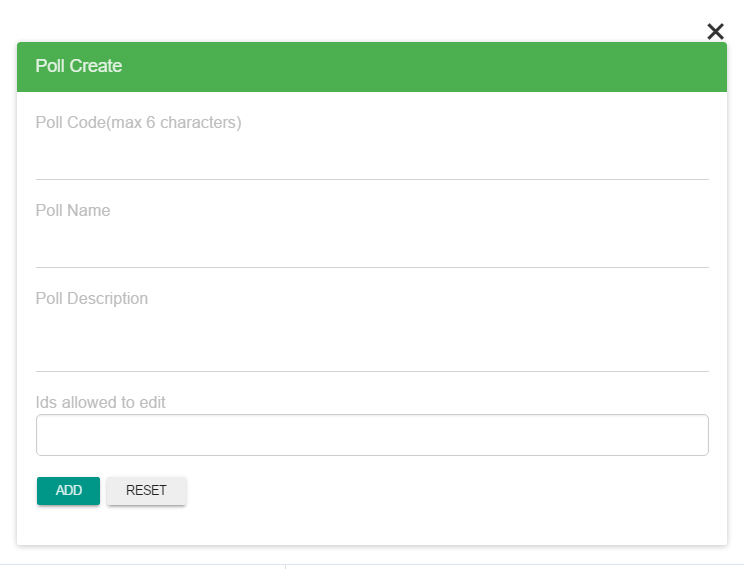
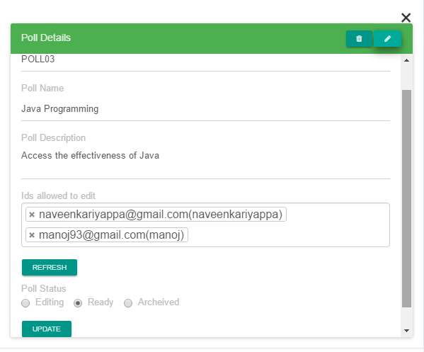
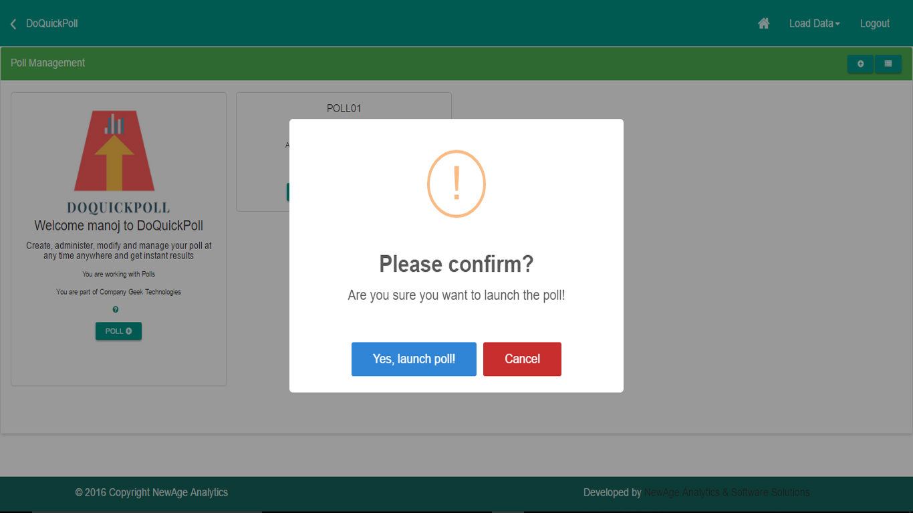
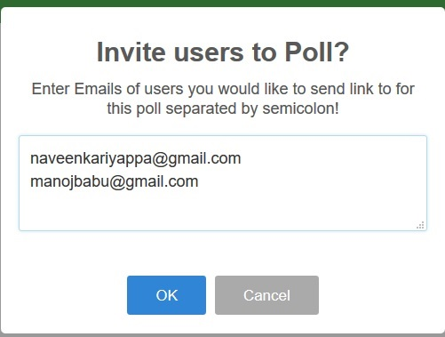
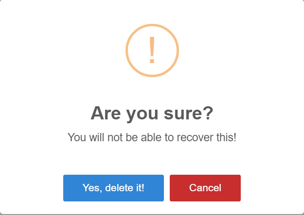

Do Quick Poll -documentation
A Place Where you can conduct polls and do analysis on the go with no efforts.
This is just the begining we have a long way to go, hey! don't worry, we have got it all covered here
Table of Contents
- Getting Started
- Create user
- Create Company
- Manage Company
- Create Polls
- Create Questions
- Launch Polls
- Launch Questions
- Invite Poll Participants
- Analyse Results
- Delete polls
- Delete Questions
- Delete company
- participate in a Poll
- View conducted polls
- Frequently asked Questions
- More..
Getting Started
This is the guide for using Doquickpoll application for Conducting Quiz, Surveys which can be static or dynamic, Polls and Questionaire. You can create a Poll, survey, questionaire, test or a quiz. Add questions to the created artifact. These questions can have different types of answer sets in terms of multiple choice, binary or a free flow text. The admins of the poll can conduct the polling and survey. and so much more
Create user
Creating a user and being a part of a company is a mandatory step to conduct polls or quiz, This can be done by clicking a Login button on top right corner of your page. Once after clicking if already have an account registered, you can enter credentials and login. If you are a new user you can click register on the screen and fill the simple form consisting of your Username, Email ID, Password, preferred Email, Mobile number, your name to be addressed and if you are available to contact select 'Yes' else select 'No' and finally click on the register button.
Create Company
Being a part of a company is mandaory if you want to conduct polls or quiz, This can be done once you login as a user, click on the Create Company Button you can see on your screen. once you click on the screen you can see a form sliding in from the right side of your screen. Where you need to enter Company code, Company Name, Company Address, Company Contact(A contact where we a communicate), Company Phone number, Moble number, Email address, Accept the terms and condition by selecting it as true and click Add button to create a company.

Manage Company
Manage Company gives you the leverage to manage your company, see the details, edit Details, see list of users, add a new user to the company, add a new admin to the company or remove the user. To Edit company details all you need to do is click on the pencil icon on the top right corner of the company detail template and you will be redirected to a form where you can edit the company details and click on the update button to commit changes about the company.

Create Polls
Create Polls gives you the leverage to create poll or multiple polls, Once you create poll, you can add questions to polls. Creating poll can be achieved in two ways
Adding Polls from Hands-on Excel
Adding polls from hands on excel can be achieved by running through the following steps
Firstly, You need to have the admin privillges to create a poll in a company. Once you login as an admin, you can see a Load data button on the top right corner of your screen next to the logout button, you can click on that and you will be able to see a dropdown where you can see options like Polls and Questions. you need to select Polls to add Polls from hands on Excel.
Once you select Polls you can see the following screen
once you see the following screen you are ready to add polls using hands on excel
- In your Excel, select the poll data that you want to copy
- Copy the data.
- Switch to page showing the above scren and paste the data copied from your excel sheets
Here you will leverage to manage polls for
Creating, Launching, Deleting and Managing the Polls! (Poll cards)
- Make sure you have selected insert on the action column. This will instruct to the system that data is being inserted.
- Make sure you have put Poll code in all capital characters, example POLL01 and is a 6 character code which is used to distinguish between polls. This format is expected to be a standardised data within polls.
- Give an appropriate poll name at the column which says Poll name, Example: Java Programming
- Give a small discription for the poll
- Editor - A person who edits or makes changes to polls.
- Status - State of polls at a particular time. It can be Editing, Ready. Once the polling is done, you can archive(backup) your poll details.
- Save Button is used to save the data to the lacal system. Note:- This data is only saved in the local system. To load the data onto the server you need to load it as Load Application data
- Load saved data button is used to load data from your local system. Note:- This data is being loaded from the local system if you intend to load it from the server please select Load Application Data.
- Load Application Data Button is used to load all the poll data in the application.
- Update Application Data Button is used to bring the data to latest state.
Create Questions
Create questions gives you the leverage to create questions or add questions to a particular poll. Creating questions can be achieved in two ways
Adding Questions from Hands-on Excel
Adding questions from hands-on excel can be achieved by the following steps
Once you login as an admin you can see a Load data button on the top right corner of your screen next to the logout button, you can click on that and you can see a dropdown where you can see options like Polls and Questions. you need to select Question to add Question from hands-on Excel.
Once you select Question you can see the following screen
once you see the following screen you are ready to add questions using hands on excel
- In your Excel, select the question data that you want to copy
- Copy the data.
- Switch to page showing the above screen and paste the data copied from your excel sheets
Here you will levereage to manage Questions for
Creating, Launching, Deleting and Managing the Questions! (Question cards)
- Make sure you have selected insert on the action column. This will instruct to the system that data is being inserted.
- Make sure you have your Question code in upper-case letter. Example QUES01 and is a 6 characher code which is used to distingush between Questions inside a particular poll. This format is expected to be a standardised data within polls.
- Describe your question at the column which says Question Description, Example: What is Collection in Java?
- Status :- State of questions at a particular time. It can be Editing, Ready. Once the polling is done, you can archive(backup) your poll details.
- Sequence :- Serial arrangement of questions in which things follow in logical order or a recurrent pattern
- Answer Type :- You can select answer type from any of the three types. 1. Yes/No, 2. Select Options, 3. Open Ended
- Number of options :- Select one of a number of things from which only one can be chosen, You can have atmost 9 options.
- Options :-
- Answer yes /no :- You can select answer yes/no as Yes, if you have answer description to the question. Or select No.
- Answer :- You can describe your answer here for the question which has answer yes/no as Yes.
- Save Button is used to save the data to the lacal system. Note:- This data is only saved in the local system. To load the data onto the server you need to load it as Load Application data
- Load saved data button is used to load data from your local system. Note:- This data is being loaded from the local system if you intend to load it from the server please select Load Application Data.
- Load Application Data Button is used to load all the poll data in the application.
- Update Application Data Button is used to bring the data to latest state.
Launch Polls
Launching a Poll gives you leverage to Launch and analyse the results. Before you could launch a poll, you need to have admin privilege. To launch a poll you need to simply select Manage Poll button from your home screen, you can see this button only if you have the right privilege, Once you click on manage polls you can see all the polls created in your company. As shown in the image below

as you can see there are four buttons for each poll
-
The first button on the poll card lets you to view the details of the poll.
- You can also Edit or Delete Poll from the view poll template, In the View Poll you can see a Pencil and a Trash symbol on the top left corner of the template. The Trash like button lets you delete the poll and the pencil like button lets you to edit the poll. Make sure you change the status to ready to keep the poll ready to launch.

The second button on the poll card lets you to launch your poll, that is changing the poll status from editing to ready, so that you can release it across.
- The third button(trash shaped) is to delete the poll.
-
The fourth button(? shaped) is to get inside the poll, to view all the questions in that specific poll.

The poll+ button just below the hamburger icon is to create a new poll.
- Also the plus button just below the logout button lets you to create a new poll. The button next to it, is to check the poll conducted list.
- Poll code should always be in upper-case letter
-
To Launch poll, click on the second button with the launch symbol, once you click the second button you should be getting a confirmation pop-up asking if are you sure to launch the poll. Select Launch to Lauunch the poll


Here you can find the list of all the polls created in your company. You need to select the poll which you intend to launch, remember a question always belong to a Poll. If you have not created Poll please do so. refer Create Polls, to create a Poll. However, if you have created a poll already, you need to have questions inside the poll to launch it. If you have not created any question in a poll please do so. refer Create Questions to create a question. Once you have created the question to launch the question you need to have launched the poll if you have not launched the poll. please do so. refer Launch Polls to launch a poll. And finally once the Poll is launched you can see the following screen.
This will give you an unique URL that can be shared with participants who are interested in a particular poll.

Here you can see the question code, Status and options like Release, Delete and Close that particular Questions selected. You need to manually select the questions to be shown to the participants.
-
1 Select Release to launch a question, Once you select release you must be seeing a pop-up asking for time(in seconds), Please select the appropriate time and click OK. Note the Default time is 30 seconds (if you don't select time limit it is 30 seconds by default).

2 Select Delete to delete that particular question.
3 Select Close to Close that particular question manually.
Invite Poll Participants
Inviting a poll is a necessary step to invite interested participants to your Poll. Before you could invite a participant you need to have the admin privilege to launch a Poll and so forth invite a participant. To invite you need to simply select Manage Poll button from your home screen, you can see this button only if you have the right privilege, Once you click on manage polls you can see all the polls created in your company. As shown in the image below
Here you can find the list of all the polls created in your company. You need to select the poll which you intend to launch and Launch the poll to invite, Once you launch the poll you should be able to see the following screen.

Here you can find Invite button on the Top of the screen. Click on the invite button and the following pop-up screen where you can type in the participant's e-mail IDs to invite and click OK. This sends a mail to the participants with the URL to the particular poll you have launched.

There is also another way to invite participants, Once you Launch the poll you can see the generated URL on the top on the screen, you can also copy the url and send it via any texting medium like messages, whatsapp, facebook etc.
Analyse Results
Analysing results is very simple. You can do it when a question is closed after polling, Once the question is closed the results can be seen on the right side template of the question. Poll participants will also have the privilege to view the results as the they participate in the poll. The results for them is seen below the question.
Delete polls
Deleting a poll is very easy, all you need to do is from your home page just click on Manage Polls, In order to do so, you need to have the right privilege. Once you click on manage polls you will be able to see all the polls listed in your company. You can select the poll of interest and delete it by clicking the trash button.

Delete Questions
Deleting a question is very easy, all you need to do is from your home page just click on Manage Polls, In order to do so, you need to have the right privilege. Once you click on manage polls you will be able to see all the polls listed in your company. You need to select your poll of interest and get inside by clicking the ? shaped button. And here, you can see the questions, you can select the question that you want to delete and delete it by clicking the trash button.
Delete company
Delete Company gives you the leverage to delete your company.
participate in a Poll
A participant can participate in a poll through our web interface or mobile interface. Anyone who has a web browser can participate. You control which poll your participants sees by Launching it. And you need to send across the URL of the particular poll to the participants(by Inviting). They visit your Poll page at http://205.147.100.236/Poll/username/ABCDE, the poll appears, and they click to respond.
View conducted polls
Instant Results allows you to show your respondents a real-time summary of your poll results. The results are displayed in the form of a graph, Pie chart.
Frequently asked Questions
1. How does it work?
As a poll is displayed to an participants, they need to submit their responses by visiting a specific web site(URL). The responses given by the participants are analysed and the results can be displayed in a graph. The response is displayed in real time on-screen.
2. What is a poll? Is it the same as a question ?
Yes, a poll is a same as a question or prompt you are inviting your participants to interact with.
3. What is the difference between the different types of polls?
Yes/No question is a question whose expected answer is either "yes" or "no". An example of a Yes/No question, Is java an object oriented language?" with options Yes or No. Select options or A multiple choice question lets you define a set of choices that participants can choose from. An example of a select options or multiple choice question, "Which is a valid keyword in java?" with options like "interface", "string", "FLoat", and "unsigned". An open ended question allows participants to send free-form text responses or short answers instead of pre-defined choices. An example of an open ended question, "What is Collection in Java?" and participants can send in any short answer they want. Their answers might be just one word, a short phrase, or an entire sentence. Example, A collection is a group of objects, it is similar to String Template Library (STL) of C++ programming language.
4. What is an active poll?
Active poll is the poll that's on the big screen in front of everyone, being shown on their mobile devices.
5. What is poll status of a poll? Can I activate more than one poll at a time?
State of polls at a particular time. It can be Editing, Ready. Once the polling is done, you can archive(backup) your poll details. Most presenters want to focus on one poll question at a time with their participants. That's the default way we've set things up.
Yes, If you want your participants to be able to answer lots of questions all at the same time, you can set that up. Only one poll can be the active poll at a time. It's our way of identifying which poll you're currently presenting. A poll will automatically become the active poll anytime you present it.
6. How fast do responses show up?
Most of the time a response will be displayed within 2-5 seconds. The delay depends on the participant's cellular carrier or internet bandwidth of the participants and Finally on to live polls wherever they are being viewed. Poll Everywhere has handled very large events with thousands of responses. Web and smartphone responses are instant.